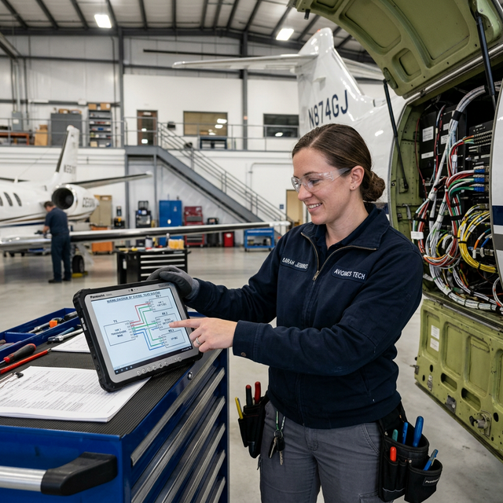

ARINC 429 architecture basics
Module Objectives
- Define the architectural directionality (transmit/receive relationship) native to ARINC 429.
- State the maximum number of transmitters and receivers allowed on a single ARINC 429 bus.
- Explain the broadcast topology utilized by an ARINC 429 transmitter.
Why Does This Matter?

An inexperienced technician is wiring the ARINC 429 output from a new GPS navigator to feed an autopilot and a digital HSI display. They correctly wire both receivers to the GPS output bus. However, to save running an extra wire, they also splice the autopilot's AHRS output directly onto that exact same twisted pair, effectively giving the bus two transmitters. The moment power is applied, the bus crashes entirely, the displays red-X, and the autopilot disconnects. ARINC 429 strictly allows only one transmitter per physical bus — violating this architectural rule guarantees immediate system-wide failure.
What You Need To Know
What Is ARINC 429?
ARINC 429 (maintained by Aeronautical Radio Incorporated) is the absolute industry-standard digital databus for General Aviation, Business Aviation, and commercial transport avionics. It is reliably the most common databus protocol an avionics technician will ever encounter, wire, or troubleshoot.
Architecture: Unidirectional, Single-Transmitter
The defining electrical characteristic of ARINC 429 is that it is fundamentally unidirectional:
- ONE Transmitter limitation: Only one exact LRU can physically transmit data onto a specific bus pair.
- Multiple Receivers: Up to 20 individual LRU receivers can be spliced into that single bus to passively listen.
- One-Way Street: Data flows in one rigid direction only — radiating outward from the single transmitter to the multiple receivers.
- No Bi-directional capability: A receiver absolutely cannot transmit data back on the same bus wires. If two LRUs need two-way communication (e.g., GPS talks to Autopilot, Autopilot talks back to GPS), you must install two completely separate ARINC 429 bus cables — one for each direction.
Physical Layer Characteristics
- Uses two wires: A Shielded Twisted Pair (STP). The wires are designated "A/High" and "B/Low".
- Utilizes differential signaling (measuring the voltage difference between A and B, not A to ground) for massive noise immunity within the airframe.
Topology: The Broadcast Model
ARINC 429 operates on a highly reliable, passive broadcast topology:
- The single transmitter continuously, repetitively broadcasts its entire catalog of data parameters (altitude, groundspeed, wind direction) onto the bus in a looping cycle.
- The receiving LRUs passively listen to the torrent of data.
- Each receiver is programmed to internally select only the specific data labels it needs and completely ignore the rest.
- There is no "Bus Controller" orchestrating traffic. The transmitter just talks, and the receivers simply listen. If a receiver dies, the transmitter never knows and keeps broadcasting.
System Visualization
graph TD
A[Transmission Rule] --> B[GPS Navigator TX Port]
B -->|ARINC 429 Bus 1 Outbound Only| C{Bus Splice Point}
C -->|Listening| D[Autopilot RX Port]
C -->|Listening| E[Digital HSI RX Port]
C -->|Listening| F[Radar RX Port]
D -.->|Attempt to Transmit on Bus 1| G[Hardware Crash - Data Collision]
D -->|Autopilot needs to talk to GPS| H[Must run separate ARINC 429 Bus 2]
H -->|Outbound Only| I[GPS Navigator RX Port]
style G fill:#991b1b,stroke:#7f1d1d,stroke-width:2px,color:#fff
style H fill:#1e40af,stroke:#1e3a8a,stroke-width:2px,color:#fff
On The Job
When actively pinning out an ARINC 429 bus during an installation, rigorously verify your drawings: There can only be ONE transmitter TX out wired to the bus. Multiple RX inputs spliced onto the same bus are perfectly fine (up to 20). If the engineering says two LRUs need to share data back and forth, you immediately know you must fabricate two separate twisted pairs. Never cross an A wire to a B wire (Rx A must go to Tx A), or the differential signal will invert and instantly read as garbage data.
Reference Terms
ARINC 429
A unidirectional, two-wire (shielded twisted pair) serial data bus standard used in general aviation and commercial avionics; one transmitter sends data to one or more receivers in a point-to-point or broadcast configuration.
ARINC 429 Topology
ARINC 429 uses a point-to-point or broadcast topology: one transmitter on a shielded twisted-pair bus, sending to one or multiple receivers. No receiver can transmit back on the same bus.
ARINC 429 — Industry Standard
ARINC 429 is the industry-standard aircraft digital data bus for general aviation and commercial avionics, defined by Aeronautical Radio Incorporated (ARINC), and used by the majority of avionics manufacturers.
ARINC 429 — Common Avionics Standard
ARINC 429 is one of the most widely used digital data bus standards in aviation, found in the majority of general aviation glass-cockpit avionics and commercial transport aircraft systems.
ARINC 429 — Unidirectional Serial Standard
ARINC 429 is a unidirectional serial data bus standard where digital data flows in one direction only — from a single source transmitter to one or more receiving LRUs.
ARINC 429 Bus Topology
ARINC 429 uses a single-transmitter-to-multiple-receivers (or point-to-point) topology: one LRU is the designated transmitter for each bus, and up to 20 receivers can be connected to the same two-wire bus.
ARINC 429 Primary Purpose
ARINC 429 provides a standardized method for digital data exchange between avionics Line Replaceable Units (LRUs), ensuring interoperability between equipment from different manufacturers.
Unidirectional
Data flowing exclusively in one direction: from one single transmitter to one or more listening receivers.
Broadcast Topology
A simple communication architecture where the transmitter continuously pushes all data outward, and receivers silently filter what they need.
Differential Signaling
Transmitting data by calculating the voltage difference between two wires (A and B) rather than a single wire to ground, heavily canceling induced noise.
Assessment Check
The golden rule of ARINC 429: Exactly ONE transmitter, up to 20 receivers, flowing in ONE direction only, over a single shielded twisted pair. --- ---